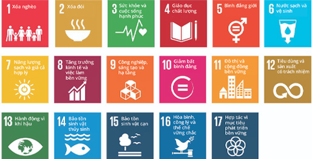

Chương trình hành động quốc gia về sản xuất và tiêu dùng bền vững đến năm 2020 TẦM NHÌN ĐẾN NĂM 2030
I. MỤC TIÊU
1. Mục tiêu tổng quát
Từng bước thay đổi mô hình sản xuất và tiêu dùng theo hướng nâng cao hiệu quả sử dụng các nguồn tài nguyên và năng lượng; tăng cường sử dụng các nguyên vật liệu, năng lượng tái tạo, sản phẩm thân thiện môi trường; giảm thiểu, tái sử dụng và tái chế chất thải; duy trì tính bền vững của hệ sinh thái tại tất cả các khâu trong vòng đời sản phẩm từ khai thác, cung ứng nguyên liệu đến sản xuất chế biến, phân phối, tiêu dùng và thải bỏ sản phẩm.
2. Mục tiêu cụ thể
a) Giai đoạn 2016 - 2020:
- Hoàn thiện cơ chế, chính sách thực hiện sản xuất và tiêu dùng bền vững;
- Phấn đấu tỷ lệ doanh nghiệp trong các ngành sử dụng nhiều năng lượng, có nguy cơ ô nhiễm môi trường cao, xây dựng và thực hiện lộ trình áp dụng đổi mới công nghệ theo hướng công nghệ sạch đạt 60% đến 70%; tỷ lệ các cơ sở sản xuất công nghiệp áp dụng các giải pháp về sản xuất sạch hơn, tiết kiệm năng lượng đạt 50%; hoạt động đổi mới sinh thái được triển khai thí điểm thành công trong các doanh nghiệp, khu công nghiệp, cụm công nghiệp, từng bước mở rộng quy mô và phạm vi áp dụng; tỷ trọng đóng góp của các ngành công nghiệp xanh, công nghiệp môi trường, tái chế chất thải trong GDP từ 42% đến 45%;
- Giảm thiểu việc phát sinh chất thải trong hoạt động phân phối. Phấn đấu khoảng 50% các doanh nghiệp trong lĩnh vực phân phối có nhận thức, được hướng dẫn thực hiện và áp dụng các giải pháp về sản xuất sạch hơn, tiết kiệm năng lượng; giảm đến khoảng 65% tỷ lệ sử dụng bao bì khó phân hủy tại các siêu thị, trung tâm thương mại và đến khoảng 50% tại các chợ dân sinh; thực hiện chứng nhận các mô hình phân phối xanh; phát triển thành công và từng bước nhân rộng các mô hình chuỗi cung ứng bền vững, chuỗi giá trị xanh cho một số nhóm sản phẩm;
- Nâng dần tỷ trọng các sản phẩm, dịch vụ thân thiện môi trường trong cơ cấu hàng xuất khẩu trọng điểm của Việt Nam; doanh nghiệp xuất khẩu được cung cấp thông tin, hướng dẫn, hỗ trợ áp dụng các hệ thống quản lý, tiêu chuẩn về môi trường và phát triển bền vững của nhà nhập khẩu;
- Người tiêu dùng và cộng đồng được cung cấp thông tin đầy đủ về các sản phẩm thân thiện với môi trường, các hoạt động sản xuất và tiêu dùng bền vững; nâng tỷ trọng các sản phẩm, dịch vụ thân thiện môi trường trong cơ cấu chi tiêu công của Chính phủ; hoàn thiện khung pháp lý quy định, hướng dẫn thực hiện mua sắm công xanh;
- Phấn đấu 90% phế liệu nhựa, giấy, dầu thải và sắt thép trong nước được tái chế; 85% chất thải rắn sinh hoạt đô thị được tái chế, tái sử dụng, thu hồi năng lượng hoặc sản xuất phân hữu cơ; 75% chất thải rắn công nghiệp không nguy hại được thu hồi để tái sử dụng và tái chế và 50% chất thải rắn xây dựng phát sinh tại các đô thị được thu hồi để tái sử dụng hoặc tái chế.
b) Giai đoạn 2021 - 2030
Triển khai đồng bộ các hoạt động thúc đẩy sản xuất và tiêu dùng bền vững; các mô hình, thực hành về sản xuất và tiêu dùng bền vững được phổ biến và áp dụng rộng rãi tại cộng đồng và các doanh nghiệp. Cơ bản chuyển đổi được mô hình sản xuất và tiêu dùng hiện tại theo hướng bền vững.
Quyết định 76/QĐ-TTg của Thủ tướng Chính phủ phê duyệt Chương trình hành động quốc gia về sản xuất và tiêu dùng bền vững đến năm 2020, tầm nhìn đến năm 2030 được ban hành ngày 11/01/2016.
II. NHIỆM VỤ CHỦ YẾU
1. Xây dựng, hoàn thiện khung pháp lý và chính sách thực hiện sản xuất và tiêu dùng bền vững
- Lồng ghép các nội dung về sản xuất và tiêu dùng bền vững vào trong các chiến lược, quy hoạch, kế hoạch phát triển quốc gia, ngành và địa phương, các chương trình phát triển bền vững, kế hoạch phát triển kinh tế - xã hội, bảo vệ môi trường và xóa đói giảm nghèo;
- Xây dựng và hoàn thiện chính sách khuyến khích đầu tư phát triển sản xuất, kinh doanh và phân phối các sản phẩm và dịch vụ thân thiện môi trường; xây dựng các cơ chế khuyến khích, ưu đãi việc tiêu dùng các sản phẩm thân thiện môi trường; xây dựng và hoàn thiện cơ chế phối hợp, thúc đẩy hợp tác công tư trong việc thực hiện sản xuất và tiêu dùng bền vững; xây dựng hệ thống chỉ tiêu quốc gia theo dõi, đánh giá thực hiện sản xuất và tiêu dùng bền vững;
- Xây dựng và hoàn thiện chính sách thúc đẩy hoạt động mua sắm công xanh; ban hành danh mục các sản phẩm, dịch vụ thân thiện môi trường ưu tiên trong mua sắm công;
- Xây dựng chính sách thương mại quốc tế, chính sách thuế xuất khẩu, thuế nhập khẩu đối với sản phẩm và dịch vụ thân thiện môi trường phù hợp với lộ trình hội nhập quốc tế, các hiệp định thương mại song phương và đa phương;
- Xây dựng và hoàn thiện khung chính sách thúc đẩy các hoạt động tuần hoàn, tái chế, tái sử dụng chất thải.
2. Thúc đẩy sản xuất và chuyển dịch cơ cấu kinh tế theo hướng bền vững
- Khai thác, sử dụng bền vững các nguồn tài nguyên thiên nhiên; đẩy mạnh việc thay thế sử dụng các nguồn tài nguyên có thể cạn kiệt bằng các nguồn tài nguyên, năng lượng mới, có thể tái tạo;
- Tiếp tục thực hiện sản xuất sạch hơn, sử dụng năng lượng tiết kiệm và hiệu quả; nghiên cứu, ứng dụng các công nghệ sạch, công nghệ thân thiện môi trường; đổi mới công nghệ và loại bỏ theo lộ trình các công nghệ lạc hậu, tiêu hao nhiều nguyên nhiên liệu, gây ô nhiễm môi trường; phát triển nguồn nhân lực đáp ứng yêu cầu triển khai các hoạt động sản xuất bền vững;
- Áp dụng phương thức tiếp cận vòng đời sản phẩm trong triển khai các hoạt động đổi mới sinh thái tại các doanh nghiệp, khu công nghiệp, cụm công nghiệp nhằm nâng cao hiệu quả sử dụng tài nguyên, phòng ngừa và giảm thiểu chất thải;
- Phát triển sản xuất các sản phẩm, dịch vụ thân thiện môi trường; tiếp tục đẩy mạnh việc phát triển ngành công nghiệp môi trường.
3. Xanh hóa hệ thống phân phối và phát triển chuỗi cung ứng các sản phẩm, dịch vụ thân thiện môi trường
- Áp dụng sản xuất sạch hơn, sử dụng năng lượng tiết kiệm và hiệu quả trong hoạt động phân phối các sản phẩm, dịch vụ; giảm sử dụng các bao bì khó phân hủy tại các siêu thị, trung tâm thương mại, chợ dân sinh; đẩy mạnh việc thay thế sử dụng các bao bì khó phân hủy bằng các loại bao bì thân thiện môi trường;
- Nghiên cứu, hỗ trợ triển khai thí điểm, tổ chức phổ biến, nhân rộng một số mô hình phân phối các sản phẩm và dịch vụ thân thiện môi trường; xây dựng hệ thống tiêu chuẩn và thực hiện cấp chứng nhận mô hình phân phối xanh, thân thiện môi trường;
- Thúc đẩy liên kết bền vững giữa nhà cung cấp nguyên liệu - nhà sản xuất - nhà phân phối - người tiêu dùng trong việc sản xuất, phân phối và sử dụng các sản phẩm, dịch vụ thân thiện môi trường;
- Tuyên truyền, nâng cao nhận thức về sản xuất và tiêu dùng bền vững cho các đối tượng tham gia vào hệ thống phân phối và chuỗi cung ứng các sản phẩm.
4. Nâng cao khả năng tiếp cận thị trường và thúc đẩy xuất khẩu các sản phẩm xuất khẩu trọng điểm của Việt Nam theo hướng bền vững
- Đánh giá tiềm năng thị trường và khả năng cung ứng các sản phẩm thân thiện môi trường của các doanh nghiệp xuất khẩu của Việt Nam; nghiên cứu các cơ hội xuất khẩu, tham gia vào chuỗi giá trị toàn cầu đối với các sản phẩm xuất khẩu trọng điểm của Việt Nam khi được dán nhãn xanh Việt Nam, nhãn tiết kiệm năng lượng và nhãn sinh thái khác;
- Hỗ trợ xúc tiến thương mại, tiếp cận thị trường đối với các sản phẩm được dán nhãn xanh Việt Nam, nhãn tiết kiệm năng lượng và các nhãn sinh thái khác;
- Tăng cường năng lực cạnh tranh của các sản phẩm xuất khẩu trọng điểm; nâng cao khả năng tiếp cận thị trường và khả năng đáp ứng các quy định về môi trường, phát triển bền vững của các sản phẩm xuất khẩu trọng điểm của Việt Nam;
- Hướng dẫn, hỗ trợ kỹ thuật đối với doanh nghiệp trong việc xây dựng áp dụng và chứng nhận các hệ thống tiêu chuẩn quốc tế, tiêu chuẩn của nhà nhập khẩu về môi trường và phát triển bền vững; xây dựng mô hình doanh nghiệp xuất khẩu bền vững.

Các mục tiêu phát triển bền vững toàn cầu
5. Thay đổi hành vi tiêu dùng, thực hiện lối sống bền vững
- Tuyên truyền, vận động xây dựng lối sống thân thiện môi trường, tiêu dùng bền vững, hình thành ý thức bảo vệ môi trường, tiến tới xây dựng xã hội ít chất thải, các bon thấp, hài hòa, thân thiện môi trường;
- Tổ chức các kênh thông tin và thực hiện quảng bá sản phẩm, dịch vụ thân thiện với môi trường tới người tiêu dùng; tăng cường đào tạo và phổ biến các kiến thức, chính sách, pháp luật về sản xuất và tiêu dùng bền vững cho cán bộ, doanh nghiệp và người lao động để nâng cao chất lượng nguồn nhân lực cho thực hiện các hoạt động thực hành về sản xuất và tiêu dùng bền vững;
- Nâng cao vai trò hỗ trợ của các tổ chức xã hội bảo vệ quyền lợi người tiêu dùng trong việc tuyên truyền, phổ biến, giáo dục pháp luật và kiến thức về sản xuất và tiêu dùng bền vững cho người tiêu dùng;
- Tiếp tục thực hiện hoạt động dán nhãn xanh Việt Nam, nhãn tiết kiệm năng lượng và các loại nhãn sinh thái khác; đẩy mạnh hoạt động đánh giá, chứng nhận sản phẩm, dịch vụ thân thiện môi trường;
- Thực hiện hoạt động mua sắm xanh, ưu tiên đẩy mạnh các hoạt động về mua sắm công xanh; nghiên cứu triển khai áp dụng thí điểm và nhân rộng mô hình mua sắm công xanh;
- Phát triển và phổ biến các mô hình thực hành lối sống bền vững.
6. Thực hiện giảm thiểu, tái chế, tái sử dụng chất thải
- Tổ chức các hoạt động truyền thông, nâng cao nhận thức về tái chế, tái sử dụng chất thải cho cộng đồng và doanh nghiệp;
- Thực hiện quản lý tổng hợp chất thải rắn theo cơ chế thị trường, thu phí theo khối lượng chất thải rắn phát sinh;
- Hướng dẫn, hỗ trợ kỹ thuật thực hiện các hoạt động giảm thiểu, tái chế, tái sử dụng chất thải rắn trong sinh hoạt, sản xuất và thương mại, dịch vụ; tăng cường kiểm soát việc nhập khẩu phế liệu;
- Thực hiện thí điểm và nhân rộng các mô hình thực hiện giảm thiểu, tái chế, tái sử dụng chất thải trong cộng đồng, doanh nghiệp.
III. GIẢI PHÁP THỰC HIỆN
1. Triển khai đồng bộ, có hiệu quả các hoạt động ưu tiên của Chương trình; thực hiện lồng ghép các nhiệm vụ của Chương trình trong các chương trình, kế hoạch hành động của quốc gia và các ngành, địa phương thực hiện Chiến lược phát triển bền vững và Chiến lược quốc gia về tăng trưởng xanh và các chương trình có liên quan.
Chi tiết các hoạt động ưu tiên thực hiện Chương trình hành động quốc gia về sản xuất và tiêu dùng bền vững tại Phụ lục kèm theo Quyết định này.
2. Các Bộ, cơ quan ngang Bộ, cơ quan thuộc Chính phủ căn cứ chức năng, nhiệm vụ được giao tiến hành rà soát, lồng ghép nội dung về sản xuất và tiêu dùng bền vững vào trong các chiến lược, quy hoạch, kế hoạch phát triển của ngành, lĩnh vực, đồng thời tiếp tục đẩy mạnh việc triển khai thực hiện các nội dung về sản xuất và tiêu dùng bền vững trong các chương trình hiện có.
3. Nguồn vốn thực hiện Chương trình:
- Kinh phí để thực hiện Chương trình được huy động từ các nguồn: vốn ngân sách nhà nước, vốn viện trợ, tài trợ, các nguồn vốn đầu tư của các tổ chức, cá nhân trong nước và nước ngoài và những nguồn vốn hợp pháp khác;
- Các Bộ, ngành, địa phương theo chức năng nhiệm vụ được phân công có trách nhiệm huy động, quản lý nguồn lực kinh phí được huy động từ các nguồn vốn nói trên theo quy định hiện hành để thực hiện các nhiệm vụ của Chương trình;
- Nhà nước ưu tiên và dành kinh phí thỏa đáng từ ngân sách nhà nước để triển khai thực hiện các nhiệm vụ của�Chương trình.